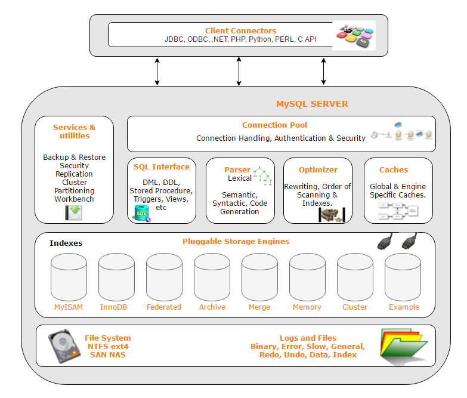
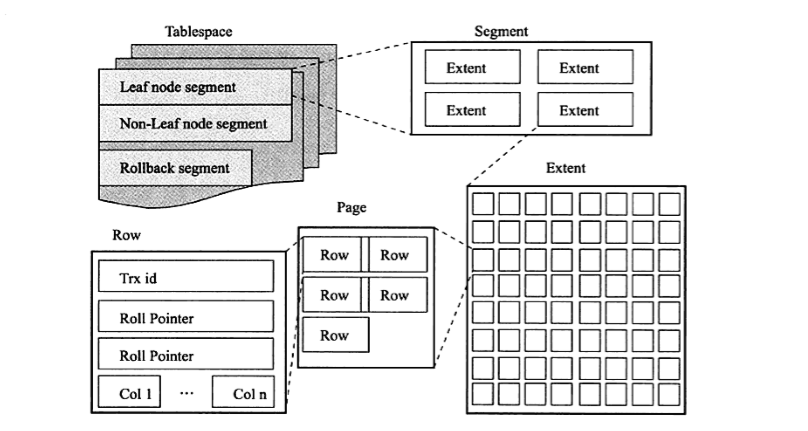

mysql体系结构和存储引擎
常用词定义
- 数据库（datebase）： 持久化的数据文件
- 实例(instance)：若干后台线程以及共享内存组成
mysql被设计成单进程多线程，通常一个数据库对应一个实例（集群是一个数据库多个实例），一般情况下，这两个概念不做区分体系结构

这是一个插件式的体系结构，所以存储引擎是可定制的。 - InnoDB存储引擎支持事务，设计目标是支持OLTP（面向在线事务处理）的应用，支持外键，读写锁，行锁等，高版本默认的存储引擎
- MyISAM 存储引擎不支持事务，表锁设计，设计目标是支持OLAP(面向联机分析处理)的应用
逻辑结构
 - 所有的数据逻辑地存放在一个表空间（tablespace）
- 表空间由段（segment）区（extent）页（page）组成
- 页是InnoDB最小的管理单位
- InnoDB是索引组织表
- InnoDB有聚集索引和辅助索引
事务四个特性（ACID）
- 原子性（Atomic）:对数据的操作，要么全执行，要么全不执行
- 一致性（Consistent）:事务在完成时，数据必须保持一致状态，数据结构必须是正确的（最难理解，可以想象分布式下数据不一致的状态）
- 隔离性（Isolation）:不用的事务修改不会影响彼此
- 持久性（Duration）:事务完成，影响必须是永久性的
隔离性一般通过锁实现，其他三个特性通过相关事务日志文件实现，Mysql redo log记录修改后的数据，undo log记录修改前数据隔离级别
- READ_UNCOMMITTED
- READ_COMMITTED
- REPEATABLE_READ
- SERIALIZABLE
从上到下，隔离性越高，并发性也就越差,死锁的记录也越大（gap间隙锁）设置这个级别是为了解决以下问题
参考Transaction 那点事儿 - Dirty Read(脏读)：事务A读取了事务B修改未提交的数据（脏数据），并在此基础上进行了修改
- Unrepeatable Read (不可重复读)：事务A读取了事务B已提交的更改数据
- Phantom Read (幻读)：事务A读取了事务B已提交的新增数据
| 事务隔离级别 | 脏读 | 不可重复读 | 幻读 |
|---|---|---|---|
| READ_UNCOMMITTED | 允许 | 允许 | 允许 |
| READ_COMMITTED | 禁止 | 允许 | 允许 |
| REPEATABLE_READ | 禁止 | 禁止 | 允许 |
| SERIALIZABLE | 禁止 | 禁止 | 禁止 |
InnoDB锁类型
- 共享锁，读锁，其他事务可以继续加此锁
- 排它锁，写锁，排斥其他锁
- 意向锁，想要获得几行的锁
- 自增长锁
几种常见锁算法：
- 记录锁（Record-Lock）:锁着索引记录
- 间隙锁（gap）:锁住一段记录
- next-key 锁，在PR隔离级别下是记录锁+间隙锁，InnoDB行的扫描锁定使用此算法
MVCC
多版本并发控制系统，在InnoDB中，在每行记录的后面增加两个隐藏列，记录创建版本号和删除版本号。
在 MVCC 中，对于读操作可以分为两种读： - 快照读：读取的历史数据，简单的 select 语句，不加锁，MVCC 实现可重复读，使用的是 MVCC 机制读取 undo 中的已经提交的数据。所以它的读取是非阻塞的。
- 当前读：需要加锁的语句，update，insert，delete，select…for update 等等都是当前读。
这种机制用来防止幻读spring事务传播机制
- PROPAGATION_REQUIRED
- RROPAGATION_REQUIRES_NEW
- PROPAGATION_NESTED
- PROPAGATION_SUPPORTS
- PROPAGATION_NOT_SUPPORTED
- PROPAGATION_NEVER
- PROPAGATION_MANDATORY
理解：这种事务传播行为，定义了从方法A到方法B的传播行为，除此之外，涉及只读的操作建议加上(readonly=true)属性,提高读取性能
以下黄勇博客的解释：
方法 A 有事务吗？
- 如果没有，就新建一个事务；如果有，就加入当前事务。这就是 PROPAGATION_REQUIRED，它也是 Spring 提供的默认事务传播行为，适合绝大多数情况。
- 如果没有，就新建一个事务；如果有，就将当前事务挂起。这就是 RROPAGATION_REQUIRES_NEW，意思就是创建了一个新事务，它和原来的事务没有任何关系了。
- 如果没有，就新建一个事务；如果有，就在当前事务中嵌套其他事务。这就是 PROPAGATION_NESTED，也就是传说中的“嵌套事务”了，所嵌套的子事务与主事务之间是有关联的（当主事务提交或回滚，子事务也会提交或回滚）。
- 如果没有，就以非事务方式执行；如果有，就使用当前事务。这就是 PROPAGATION_SUPPORTS，这种方式非常随意，没有就没有，有就有，有点无所谓的态度，反正我是支持你的。
- 如果没有，就以非事务方式执行；如果有，就将当前事务挂起。这就是 PROPAGATION_NOT_SUPPORTED，这种方式非常强硬，没有就没有，有我也不支持你，把你挂起来，不鸟你。
- 如果没有，就以非事务方式执行；如果有，就抛出异常。这就是 PROPAGATION_NEVER，这种方式更猛，没有就没有，有了反而报错，确实够牛的，它说：我从不支持事务！
- 如果没有，就抛出异常；如果有，就使用当前事务。这就是 PROPAGATION_MANDATORY，这种方式可以说是牛逼中的牛逼了，没有事务直接就报错，确实够狠的，它说：我必须要有事务！